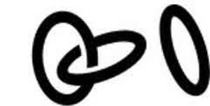

Trade Mark Journal No.2025/050 12 December 2025
UK00004305488 4 December 2025 (7,9,11,21,35,42)

- Class 7
- Household cleaning robots; household cleaning and laundry robots with artificial intelligence; parts, fittings and accessories for all the aforesaid.
- Class 9
- Computer hardware; computer software; information technology and audio-visual, multimedia and photographic devices; safety, security, protection and signalling devices; computer hardware, namely, wireless access point (WAP) devices, computer network adapters, computer network bridges, switches, routers and hubs; Computer network-attached storage (NAS) hardware; Computer hardware and software for interconnecting, managing, securing and operating local and wide area networks and telephony systems; computer hardware and software for data storage and video storage; computer hardware for communicating audio, video and data between computers via a global computer network, wide-area computer networks, and peer-to-peer computer networks; computer hardware, namely, adapter modules and data cards for connecting networked cars, computer peripherals, and devices in the internet of things (IoT); smart home hubs using artificial intelligence (AI) comprised computer hardware, and downloadable software for controlling networked devices in the internet of things (IoT), operating internet-enabled and connected lighting apparatus, thermostats, air filters, home security alarms, security cameras, security motion sensors, light switches, window blinds, audio speakers, remote controls for televisions and stereos; cameras, video cameras, and video recorders; electronic readers and controllers for controlling access to a premises; security alarms and theft alarms; electronic locks, namely, biometric locks electric locks, wireless locks, digital door locks, smart door locks, and electric door locks; point-of-sale terminals for making contactless payments; satellite navigation systems; traffic control and vehicle parking equipment, namely, traffic signal controllers, computer hardware, sensors, and cameras for traffic and parking regulation, driver and passenger safety, and vehicle security; electric sockets; electric door bells; security surveillance robots; emergency notification system comprised of a data processor and a user input device for connecting the data processor to an emergency response entity through a communication network and allowing audio and data communication between the processor and the entity; motion sensors, door and window sensors, and glass breakage sensors for personal and property safety and security; electronic plant moisture sensor and plant irrigation system; electronic-based instruments for measuring humidity, air temperature, air quality and water quality; gas leak detectors; leak detecting device for water supplied home appliances consisting of water sensor, control unit with audible alarm and water valves; humanoid robots with artificial intelligence for use in household cleaning and laundry; parts, fittings and accessories for all the aforesaid.
- Class 11
- Air purifiers; humidifiers; dehumidifiers; air heaters; air Conditioners; filters for air conditioning; filters for air purifiers; air filters for air conditioning units; light bulbs; LED light bulbs; robotic air purifiers; robotic air purifiers for household purposes; air conditioning apparatus; smart air conditioning apparatus; smart air conditioners; smart light bulbs; parts, fittings and accessories for all the aforesaid.
- Class 21
- Automated pet appliances, namely, litter boxes; automatic litter boxes for pets; automatic pet feeders; automatic pet waterers; potties for dogs; parts, fittings and accessories for all the aforesaid.
- Class 35
- Providing consumer product information; providing commercial information to consumers; business consulting and information services; customer service in the fields of telecommunications, computer networking, computer hardware and software and technology; information, advice and assistance relating to all the aforesaid.
- Class 42
- Science and technology services; IT consultancy, advisory and information services; IT services; providing technical consultation in connection with computer hardware, computer software, computer networking equipment, telephony systems, telecommunications equipment, and telecommunication systems, computer network design, storage design, security of networks, and voice and wireless communications; consulting services in the field of software as a service (SAAS); software as a service (SAAS) services in the nature of hosting cloud-based software of others for use with connecting, managing, and operating networked cars, computer peripherals, and devices in the internet of things (IoT); providing subscription-based temporary use of non-downloadable cloud-based software for connecting, managing, and operating internet of things (IoT) enabled devices; technical support services, namely, troubleshooting in the nature of diagnosing computer hardware and software problems; technical support services, namely, remote and on-site infrastructure management services for monitoring, administration and management of computer networks; computer consulting services; technological consultation in technology fields of computer networking hardware and software systems, virtualization technologies for enterprises and businesses, datacenter architecture, electronic data storage and video storage; information, advice and assistance relating to all the aforesaid.
Innoveit Inc.
Representative: Beck Greener LLP